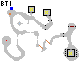
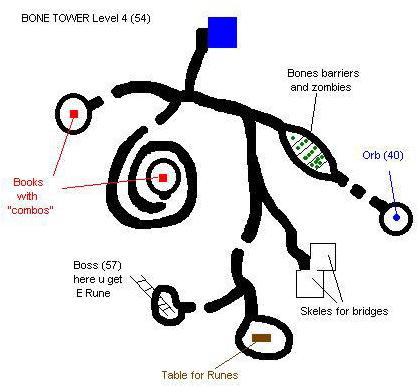

Bone Tower
Maps are being updated..... check back to see progress.
Starting Level
■ Skellies for bridges (lvl 50)
■ Blue Square
■ Stair / Ladder
■ Book
■ Orb (Lvl 40)
■ Rune Table
You get Ansuz rune from chest in entrance area Kill the Dead Wizard (Lvl 54) for the key.
Undead here are lvl 50
■ Skellies for bridges (lvl 51)
■ Blue Square
■ Stair / Ladder
■ Book
■ Orb (Lvl 40)
■ Rune Table
■ Teleport Gem
You get Berkano rune from chest in Boss area Kill the Dead Wizard (Lvl 55) for the key.
Undead here are lvl 51
■ Skellies for bridges (lvl 52)
■ Blue Square
■ Stair / Ladder
■ Book
■ Orb (Lvl 40)
■ Rune Table
■ Teleport Gem
You get Dagaz rune from chest in Boss area Kill the Dead Wizard (Lvl 55) for the key.
Undead here are lvl 52
Lvl 4 Access Rune: Dagaz
■ Skellies for bridges (lvl 54)
■ Blue Square
■ Stair / Ladder
■ Book
■ Orb (Lvl 40)
■ Rune Table
■ Teleport Gem
You get Ehwaz rune from chest in Boss area Kill the Dead Wizard (Lvl 57) for the key.
Undead here are lvl 54
| Lvl 5 Access Rune : Ehwaz | ||
| Scroll # | Mage | Seyan / Warrior |
| 50 | Lightning Flash | Attack |
| 51 | Pulse | Sword |
| 52 | Fireball | 2 Hand Sword |
| 53 | Heal | Hand 2 Hand |
| 54 | Perception | Perception |
■ Skellies for bridges (lvl 55)
■ Blue Square
■ Stair / Ladder
■ Orb (Lvl 50)
■ Rune Table
■ Teleport Gem
You get Fehu rune from chest in Boss area Kill the Dead Wizard (Lvl 60) for the key.
Undead here are lvl 55
| Lvl 6 Access Rune : Fehu | ||
| Scroll # | Mage | Seyan / Warrior |
| 60 | Profession | Profession |
| 61 | Intuition | Intuition |
| 62 | Wisdom | Strength |
| 63 | Mana | Hit Points |
| 64 | Stealth | Stealth |
■ Skellies for bridges (lvl 57)
■ Blue Square
■ Stair / Ladder
■ Orb (Lvl 50)
■ Rune Table
■ Teleport Gem
You get Halagaz rune from chest in Boss area Kill the Dead Wizard (Lvl 62) for the key.
Undead here are lvl 54
11 bridges needed x 2 for orb, they collapse before you can get back. other gaps are only 1 bridge wide.
| Lvl 7 Access Rune : Halagaz | ||
| Scroll # | Mage | Seyan / Warrior |
| 70 | Pulse | Sword |
| 71 | Lightning Flash | Attack |
| 72 | Magic Shield | Parry |
| 73 | Dagger | Surround Hit |
| 74 NW | Staff | Speed Skill |
| 74 OW | Staff | Body Control |
■ Skellies for bridges (lvl 58)
■ Blue Square
■ Stair / Ladder
■ Orb (Lvl 50)
■ Rune Table
■ Teleport Gem
You get Isa rune from chest in Boss area Kill the Dead Wizard (Lvl 64) for the key.
Undead here are lvl 58
| Lvl 8 Access Rune : Isa | ||
| Scroll # | Mage | Seyan / Warrior |
| 80 | Bless | Tactics |
| 81 | Agility | Agility |
| 82 | Mana | Hit points |
| 83 | Endurance | Endurance |
| 84 | Bartering | Bartering |
■ Skellies for bridges (lvl 59)
■ Blue Square
■ Stair / Ladder
■ Orb (Lvl 50)
■ Rune Table
■ Teleport Gem
You get Ingwaz rune from chest in Boss area Kill the Dead Wizard (Lvl 65) for the key.
Undead here are lvl 59
| Lvl 9 Access Rune : Ingwaz | ||
| Scroll # | Mage | Seyan / Warrior |
| 90 | Secret Area | Secret Area |
| 91 | Intuition | Intuition |
| 92 | Immunity | Immunity |
| 93 | Professions | Professions |
| 94 | Wisdom | Strength |
■ Skellies for bridges (lvl 61)
■ Blue Square
■ Stair / Ladder
■ Orb (Lvl 50)
■ Rune Table
■ Teleport Gem
You get Raidho rune from chest in Boss Mini Maze area Kill the Dead Wizard (Lvl 67) for the key.
Advice: Take 10+ Cure Poison pots out of this area for spider level.
Undead and Spiders here are lvl 61
Secret Area can only be accessed from level 10 table (spiders).
■ Orb (Lvl 50)
■ Rune Table
■ Teleport Gem
There are 2 orbs ■ here at 88,240, & 157,195. Table ■ to access secret area is in the EU "like" section. Two diary ■ books can also be found there. Top left corner of Map is N.
Lvl 11 Secret Level. Access by 90 combo
■ Orbs (Lvl 50)
■ Teleport Gem
Level 11 (secret) consists of a straight path with only 3 simple skellies on it to kill, The rest of the skellies on the two flanking islands (12 each) you can ignore, if your imm is high enough (140), otherwise be prepared for a barrage of FB. 3 lvl 50 orbs on this level.
|
Bonus Combo's |
|
| Runes | |
| EEB | Magic Shield |
| AED | Warr Defence |
| BEA | Immunity |
| BAB | Endurance |
| BDA | Hitpoints |
| ADD | Mana |
First off, get as many leg bones from skeletons as
you can. Use one on another to assemble them into bridges (5 in a stack
complete a bridge). You will need *lots* of bridges to complete the bone
tower, and will more than likely have to assemble more as you go along.
Each level from 1 to 9 has a blue square, and all levels (including
spider and hidden levels) aside from the first have a green jewel on the
floor that you can use to be transported back to the blue square on
level 1.
As you go through the Bone Tower, you'll need to kill the Dead Wizard
accessed from each level up the staircase. He has a key on his body that
opens a chest located somewhere in the area he is in. The chest contains
a rune, and each level has a different rune; take 2 of each rune. There
are
9 runes in all (A, B, D, E, F, H, Isa, Ing, R).
On levels 1 through 4, all you have to find is 1 lvl40 orb per level, and 2 of each rune. On levels 5 through 9, the orbs are lvl50, and you will also be searching for scrolls found on random zombies. The scrolls are numbered by page, with 5 pages per level (pages 50-54 on level 5, pages 60-64 on lvl 6, etc.). The important thing to realize is that there are 3 different versions of each page! The 3 versions each tell you one rune position so that you get a combo of 3 runes for each page. I recommend you make a table to write down what the scrolls say as you get them ("use" to read). Something like:
| Page | Rune 1 | Rune 2 | Rune 3 |
| 50 | |||
| 51 | |||
| 52 | |||
| 53 | |||
| 54 | |||
| 60 | |||
| 61 |
..Now what good are these runes? For starters, you can place any rune on
any table, then activate it ("use" the little button on the table) and
you will the transported to the start of the rune's corresponding level.
.
Next, if you use any pair of runes (on any table), you will be rewarded with a sizeable chunk of experience. I'd do this as soon as you can. If you do all 9 pairs in one run, you'll probably level once or twice.
Finally, if you use one of the combos you found from the
scrolls, or the bonus combos, you will be rewarded with +1 in the
corresponding stat shown in the tables on this page (it adds just like the
zombie showdown hp and mana scrolls). If you are going to be leveling
your char high enough to max out your bases, it's best to save these
combos till you are almost maxed out, since it costs a lot more exp to
raise a skill by one then than it does earlier on.
On level 9, random zombies also have cure poison potions on their
bodies. Take at least 10 with you, as you will need them on the spider
level (swarms of spiders in there). The orbs in the spider level are at
the far east and the far west corners of the map (north is up on your
screen). The rune table is found by entering an area similar to the
entry building of Earth Underground, which is south-west of the
western-most orb. There are some ancient diaries in this area that
explain some of the story behind the bone tower, if you care to read
about it.
The page 90 combo that you find, if used on table
in the spider level, takes you to a Hidden Level with 3 lvl50 orbs.
There are 3 skeletons blocking your way, along with about 12 on each
side of the path you walk along. These extra skeletons can't be reached,
but can be fired at with FB/LB, and if your immunity isn't high enough,
(140)
they will shoot FBs at you. After getting these 3 orbs, walk back to
where you entered from, and use the green jewel on the ground to return
to the beginning of the Bone Tower.
Now that you're done, I recommend you keep 1 of each rune in your stash
so that you can get your orbs quicker when they respawn. Be careful! The
Bone Tower is no place to die.